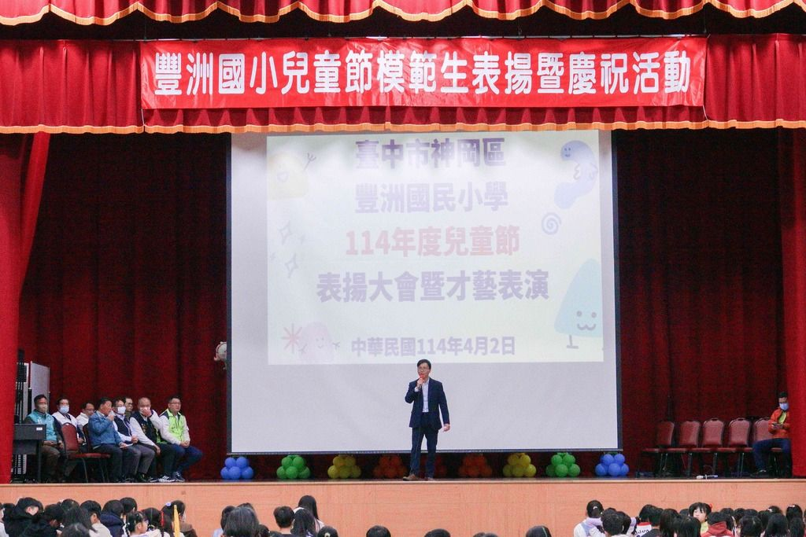
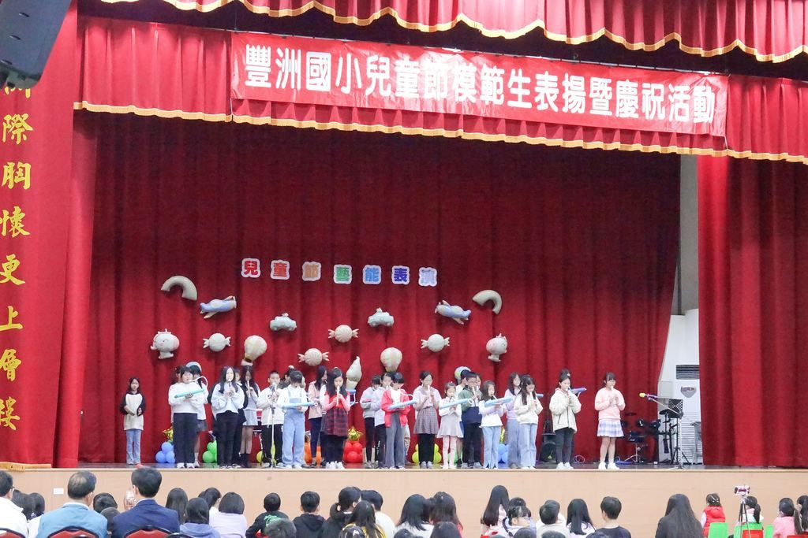
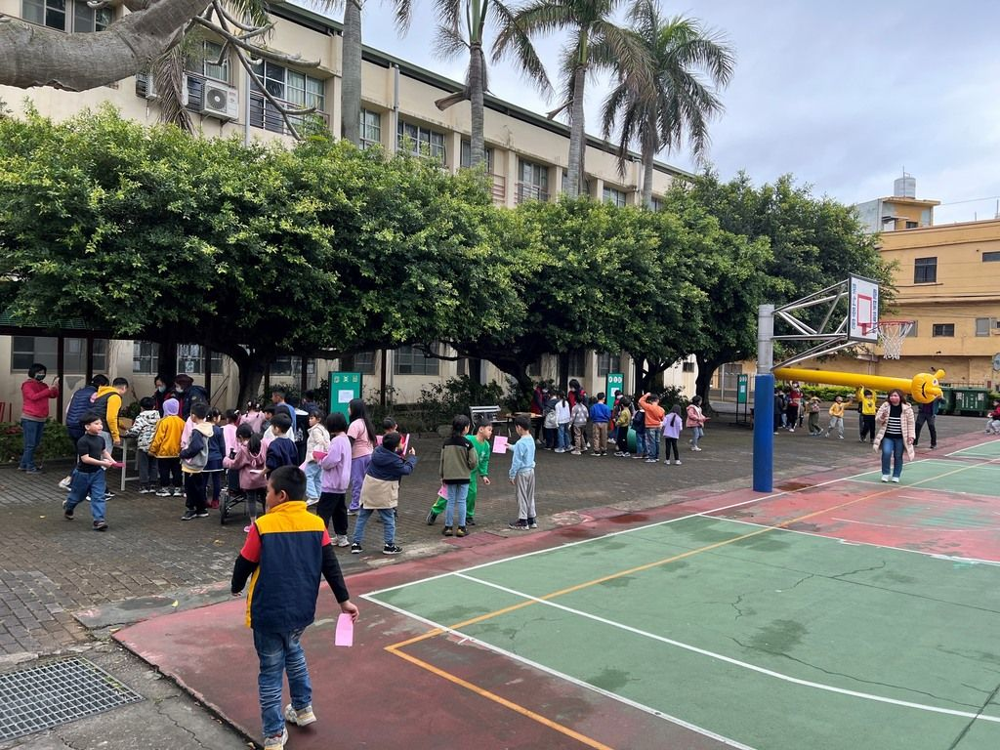
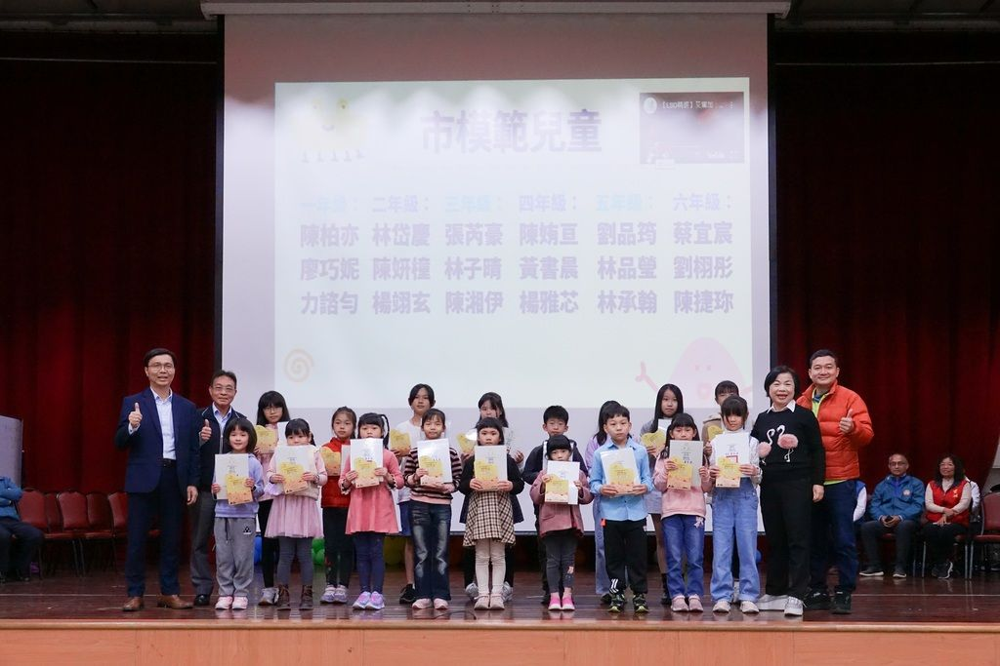

Laughter in every corner of the campus.
To give the children an unforgettable, joy-filled Children’s Day, FengChou held a wonderful celebration on April 2nd. Teachers and students joined in with enthusiasm, and the whole campus filled with laughter.
In the morning, the principal spoke at the awards ceremony, wishing every child a happy holiday and encouraging them to keep their childlike hearts and chase their dreams. The hall featured a model-student ceremony and a talent show — the school band performed, the dance club brought lively routines, and students from many grades took to the stage to warm applause.
After the performances, the student affairs office ran a string of fun game booths and a mini market. On the basketball court, children took on challenges like “Golden Pitcher,” “Bullseye,” “Zigzag Run,” and the hopping games — running, leaping, and laughing their way through a happy Children’s Day, learning teamwork and sharing along the way.
為了讓孩子們度過一個難忘又充滿歡樂的兒童節，本校於 4 月 2 日舉辦了一場精彩的兒童節慶祝活動，全校師生熱情參與，校園充滿笑聲與歡樂的氣氛。
活動當天早上，校長於表揚典禮中致詞，祝福所有小朋友節日快樂，並鼓勵大家保持童心、勇敢追夢。禮堂內安排了模範生表揚與兒童才藝表演——樂隊帶來精彩演奏、舞蹈社團帶來活潑表演，還有各年級學生帶來精采演出，贏得滿堂掌聲。
表演結束後，學務處還準備了一連串闖關活動及小市集。籃球場上設有「金牌投手」「命中紅心」「蛇行大運」「滾滾樂」「跳跳樂」等遊戲，孩子們盡情奔跑、挑戰自我，在歡笑中學會合作與分享，度過一個快樂的兒童節。



